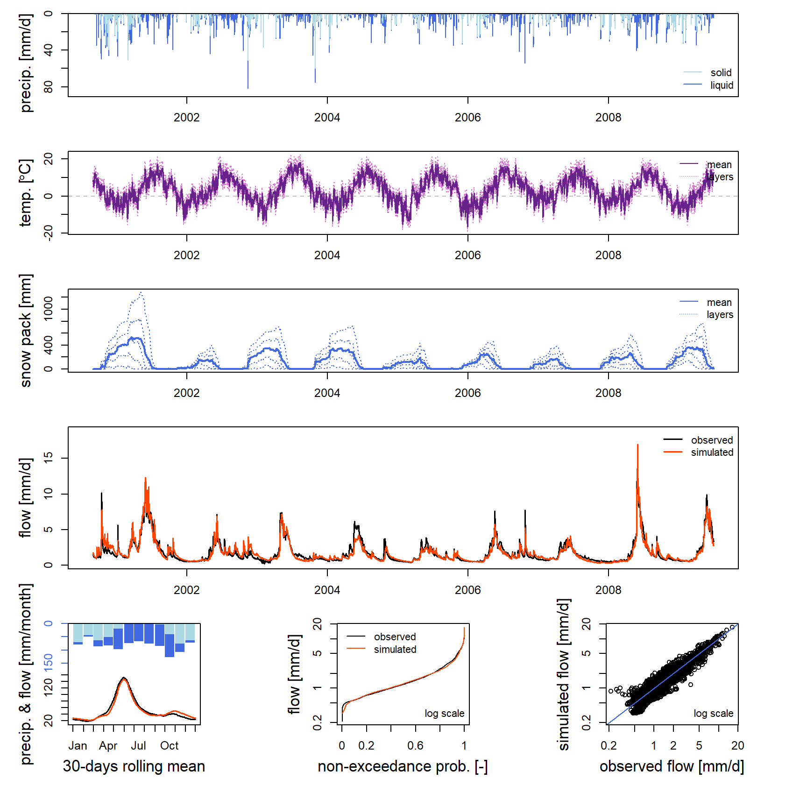

Impact du changement climatique sur le régime des débits
Pierre Brigode & Olivier Delaigue
1 Énoncé
1.1 Contexte
Le nouveau rapport du Groupe d’experts intergouvernemental sur l’évolution du climat (GIEC) vient d’être publié, annonçant les dernières tendances climatiques globales simulées par la dernière version de plusieurs modèles climatiques.
Vos collègues climatologues ont appliqué plusieurs méthodes de descente d’échelle avec pour objectif de transformer les projections climatiques globales à large échelle proposées par le GIEC, à une échelle spatiale compatible avec une analyse hydrologique à l’échelle de votre bassin versant, Durance at Embrun [La Clapière] - DREAL PACA. Vous suivrez la méthodologie appliquée par Sauquet et al. (2015) dans le cadre du projet R²D², quantifiant notamment le futur de la ressource en eau de la Durance at Embrun [La Clapière] - DREAL PACA en 2050. Le produit final proposé par vos collègues climatologues est un tableau de changements moyens (i) de températures moyennes mensuelles et (ii) de cumuls mensuels de précipitation, selon trois scénarios. Ces changements ont été calculés en comparant une période de “climat présent” (notée CP) centrée autour de l’année 2000 (1990-2010) à une période de “climat futur” (notée CF) centrée autour de l’année 2050 (2040–2060). Ils sont présentés dans le tableau suivant, et révèlent une augmentation des températures de l’air (plus marquée en été pour les scénarios 2 et 3), une diminution des précipitations en été et une augmentation des précipitations à l’automne.
Vous êtes chargé.es de quantifier l’impact de ces changements climatiques sur le régime des débits de Durance at Embrun [La Clapière] - DREAL PACA à partir des résultats de vos collègues climatologues et grâce à une modélisation pluie-débit (cf. figure suivante).
Ce travail sera réalisé en quatre étapes :
- Génération des séries climatiques futures
- Calage du modèle hydrologique associé à un module de neige sur la période historique.
- Simulation des débits générés par les séries climatiques futures
- Comparaison des régimes de débits “temps présent” et “temps futur”.
| Jan | Feb | Mar | Apr | May | Jun | Jul | Aug | Sep | Oct | Nov | Dec | |
|---|---|---|---|---|---|---|---|---|---|---|---|---|
| Temp. scenario 1 | 1.5 | 1.5 | 1.5 | 1.5 | 1.5 | 1.5 | 1.5 | 1.5 | 1.5 | 1.5 | 1.5 | 1.5 |
| Temp. scenario 2 | 2.5 | 2.5 | 3.0 | 3.0 | 3.5 | 4.0 | 4.0 | 3.5 | 3.0 | 3.0 | 2.5 | 2.5 |
| Temp. scenario 3 | 3.5 | 3.5 | 4.0 | 4.5 | 5.0 | 6.0 | 6.0 | 5.0 | 4.5 | 4.0 | 3.5 | 3.5 |
| Jan | Feb | Mar | Apr | May | Jun | Jul | Aug | Sep | Oct | Nov | Dec | |
|---|---|---|---|---|---|---|---|---|---|---|---|---|
| Precip. scenario 1 | 10 | 10 | 5 | 0 | -5 | -10 | -10 | -5 | 0 | 5 | 10 | 10 |
| Precip. scenario 2 | 15 | 15 | 7 | 0 | -7 | -15 | -15 | -7 | 0 | 7 | 25 | 20 |
| Precip. scenario 3 | 20 | 15 | 10 | 0 | -15 | -30 | -30 | -15 | 0 | 20 | 40 | 30 |
1.2 Consignes
Cette section vise à expliciter certaines tâches attendues et à décrire les conditions de calage et de simulation (période de calage des paramètres, périodes d’initialisation des réservoirs, critère de calage, etc.).
1.2.1 Calcul du régime des débits
Le régime des débits correspond à leurs variations moyennes au cours d’une année. Ici, il est décrit par la série des 12 débits moyens mensuels, estimés sur l’ensemble des années disponibles. Le débit moyen mensuel du mois de janvier est donc calculé en faisant la moyenne des débits de janvier des différentes années disponibles. L’année moyenne ainsi constituée résume le fonctionnement hydrologique du bassin étudié sur une période donnée et permet de distinguer des saisons de basses eaux et de hautes eaux. Dans un contexte de changement climatique, l’analyse de l’évolution du régime permet de quantifier d’éventuels changements saisonniers des débits, que ce soit en termes d’amplitude ou de dynamique temporelle (par exemple liés à des évolutions dans la fonte de la neige).
1.2.2 Génération des séries climatiques futures
Ici, nous ne disposons pas de séries climatiques mensuelles pour la période future, il est donc nécessaire de faire des hypothèses fortes pour simuler le régime futur du bassin étudié. Une approche pragmatique suggérée dans cet exercice est d’appliquer les changements mensuels de précipitations et de températures de l’air données par les climatologues aux séries temporelles observées sur la période de climat présent. Ainsi, l’augmentation moyenne des précipitations de janvier de 10 % prévue par le scénario 1 est considérée comme systématique pour tous les mois de janvier futurs.
Pour appliquer les évolutions mensuelles aux séries journalières, une approche consiste à interpoler au pas de temps journalier les deltas mensuels, en attribuant leur valeur au 15 de chaque mois. Cette approche permet d’estimer, pour chaque scénario et chaque variable, une valeur de delta pour chaque jour julien.
Une série de précipitations “futures” journalières peut alors être constituée en multipliant les précipitations journalières observées par le delta estimé pour chaque jour julien.
Les séries d’évapotranspiration potentielle, nécéssaires au
fonctionnement du modèle hydrologique utilisé, seront estimées à partir
de la formule développée par Oudin et al.
(2005), grâce à la fonction PE_Oudin() du package
airGR).
1.2.3 Modèle pluie-débit et module de neige
Vous utiliserez ici le modèle GR4J (Perrin, Michel, and Andréassian 2003) associé au module de neige CemaNeige (Valéry, Andréassian, and Perrin 2014).
GR4J est un modèle pluie-débit conceptuel et global, fonctionnant au pas de temps journalier et possédant 4 paramètres. Il nécessite en entrée des séries temporelles continues de précipitations et d’évapotranspirations potentielles (ETP) journalières.
Le module d’accumulation et de fonte de la neige CemaNeige fonctionne également au pas de temps journalier, et necéssite en entrée une distribution de l’altitude du bassin versant étudié, ainsi que de séries temporelles décrivant la température de l’air au sein du bassin versant.
Ces modèles sont utilisables facilement grâce au package airGRteaching (Delaigue, Coron, and Brigode 2022; Delaigue et al. 2018), développé pour le logiciel R par l’équipe Hydrologie des bassins versants de l’unité de recherche HYCAR (INRAE, France).
Les séries temporelles de précipitations, de températures de l’air,
d’ETP et de débits peuvent être facilement mises en forme grâce à la
fonction PrepGR(). On peut réaliser une simulation
pluie-débit grâce à la fonction SimGR() et un calage des
paramètres grâce à la fonction CalGR().
1.2.4 Période de calage (et d’initialisation)
Dans cet exercice, la période d’initialisation commencera le 1 janvier 1999 et s’achèvera le 31 août 2000, et la période de calage commencera le 1 septembre 2000 et s’achèvera le 29 juin 2009 .
1.2.5 Critère de calage
Le critère de calage considéré dans cet exercice est le critère de Nash et Sutcliffe (Nash and Sutcliffe 1970), noté \(NSE\) par la suite (cf. équation suivante). Ce critère est largement utilisé en modélisation hydrologique.
Le critère NSE, borné entre \(-\infty\) et \(1\), permet de quantifier la performance d’un modèle de manière relative, en comparant une série de débits simulés avec un modèle dit “naïf”, ici la moyenne des débits observés (i.e. une série de débits constituée en chaque pas de temps par la moyenne des débits observés). Ainsi, une valeur de NSE égale à 1 signifie une concordance parfaite entre les séries de débits observés et simulés (ce qui n’est jamais le cas), alors qu’une valeur de NSE inférieure à 0 signifie que la simulation considérée est moins performante que la simulation du modèle “naïf”. Le calcul de \(NSE\) est détaillé dans l’équation suivante, dans laquelle \(Q_{obs,t}\) est le débit observé au pas de temps \(t\), \(Q_{sim,t}\) est le débit simulé au pas de temps \(t\), \(\overline{Q_{obs}}\) est la moyenne des débits observés, et \(n\) est le nombre d’observations :
\[\begin{equation} NSE = 1-\frac{\sum_{t=1}^{n}(Q_{obs,t}-Q_{sim,t})^{2}}{\sum_{t=1}^{n}(Q_{obs,t}-\overline{Q_{obs}})^{2}} \end{equation}\]
Les différents éléments nécessaires pour le calcul du critère de
calage doivent être renseignés en argument de la fonction
CalGR().
1.2.6 Calage automatique des paramètres du modèle
Le calage automatique de paramètres vise à utiliser un algorithme automatique de recherche dans l’espace des paramètres, d’un optimum de la fonction objectif choisie. Il va générer automatiquement des jeux de paramètres, les tester, et en générer d’autres en fonction des performances de ceux d’ores et déjà testés. L’algorithme développé par Michel (1991) sera utilisé dans cet exercice.
Les paramètres obtenus après calage seront ensuite utilisés pour réaliser les simulations pluie-débit des périodes de climat présent et de climat futur.
1.3 Données disponibles
Les données disponibles pour la modélisation pluie-débit sont les suivantes :
- une chronique journalière de précipitations totales (liquides +
solides) [mm/jour] (
Ptot); - une chronique journalière de températures de l’air [°C]
(
Temp); - une chronique journalière d’ETP calculée grâce à la formule d’Oudin et al. (2005, mm/jour)
(
Evap); - une chronique journalière de débits exprimés en lame d’eau [mm/jour]
(
Qmmd); - une distribution de l’altitude au sein du bassin versant (courbe
hypsométrique) [m] (
Hypso).
Vous disposez également des tableaux des changements mensuels moyens estimés par vos collègues climatologues présentés en introduction.
2 Éléments de correction
2.1 Chargement et mise en forme des données
Les lignes de codes présentées ci-après permettent de lire les données nécessaires au calage du modèle pluie-débit GR4J et de définir les périodes temporelles de travail (période d’initialisation, période de calage et période de simulation) :
# Catchment data loading
library(airGRdatasets)
data("X031001001", package = "airGRdatasets")
# Observed daily time series
ts_obs <- X031001001$TS
# Latitude of the catchment outlet
lat <- X031001001$Meta$Coor$Y
# Catchment elevation distribution
hypso <- X031001001$Hypso
# Warm-up period
per_ini <- c("1999-01-01", "2000-08-31")
# Calibration period
per_cal <- c("2000-09-01", "2009-06-29")# Elevation distribution
plot(x = hypso,
xlab = "Frequency (%)", ylab = "Catchment elevation [m]")
2.2 Calage automatique de GR4J et de CemaNeige
# Data processing for GR4J
prep_hist <- PrepGR(DatesR = ts_obs$Date,
Precip = ts_obs$Ptot,
PotEvap = ts_obs$Evap,
TempMean = ts_obs$Temp,
ZInputs = hypso[51],
HypsoData = hypso,
Qobs = ts_obs$Qmmd,
HydroModel = "GR4J",
CemaNeige = TRUE)
# Calibration step
cal_hist <- CalGR(PrepGR = prep_hist,
CalCrit = "NSE",
WupPer = per_ini,
CalPer = per_cal,
verbose = TRUE)## Grid-Screening in progress (0% 20% 40% 60% 80% 100%)
## Screening completed (729 runs)
## Param = 432.681, -0.649, 83.096, 2.384, 0.705, 3.787
## Crit. NSE[Q] = 0.7956
## Steepest-descent local search in progress
## Calibration completed (41 iterations, 1196 runs)
## Param = 482.992, 0.601, 275.889, 1.369, 0.333, 3.942
## Crit. NSE[Q] = 0.9075# Get parameter and criterion values
param_cal_hist <- GetParam(cal_hist)
GetCrit(cal_hist)## NSE[Q]
## 0.9075078# Graphical assessment
plot(cal_hist)
# Combination of observed and simulated streamflow time series
ts_qhist <- as.data.frame(cal_hist)
ts_qhist <- ts_qhist[, c("Dates", "Qobs", "Qsim")]2.3 Calcul des régimes observé et simulé sur la période CP
Les lignes de codes présentées ci-après permettent de calculer les régimes observés et simulés des débits aux pas de temps journaliers et mensuels.
# Daily regimes
reg_hist_d <- SeriesAggreg(ts_qhist,
Format = "%d",
ConvertFun = c("mean", "mean"))
is_feb29 <- format(x = reg_d$Date, format = "%m-%d") == "02-29"
reg_hist_d <- reg_d[!is_feb29, ]
# Monthly regimes
reg_hist_m <- SeriesAggreg(ts_qhist,
Format = "%m",
ConvertFun = c("sum", "sum"))
# Calculated regimes
reg_hist_m## Dates Qobs Qsim
## 2270 2000-09-01 339.928 342.9322
## 2545 2000-10-01 376.959 424.5159
## 2856 2000-11-01 317.620 413.6535
## 3165 2000-12-01 241.386 312.4544
## 2 2001-01-01 219.614 248.8342
## 423 2001-02-01 166.265 192.1759
## 717 2001-03-01 291.189 286.5678
## 1068 2001-04-01 471.406 370.3787
## 1221 2001-05-01 1209.560 1104.5823
## 1537 2001-06-01 1174.049 1112.9204
## 1807 2001-07-01 554.159 509.9024
## 2076 2001-08-01 369.625 326.5216Les régimes ainsi calculés peuvent être représentés graphiquement (cf. figure suivante). La comparaison des deux régimes permet d’évaluer la capacité du modèle pluie-débit (ici GR4J et CemaNeige) à reproduire le régime du bassin étudié.
2.4 Génération des séries climatiques de la période future
Les lignes de codes présentées ci-après permettent de générer des séries climatiques (ETP, T et P) sur la période de “climat futur” en utilisant les séries observées sur la période de “climat présent” et en les transformant à partir des changements climatiques estimés par les climatologues.
# Delta of temperature (assigned on the 15th of each month)
delta_temp <- data.frame(Month = sprintf("%02i-15", 1:12),
Tscen1 = rep(1.5, 12),
Tscen2 = c(2.5, 2.5, 3.0, 3.0, 3.5, 4.0, 4.0, 3.5, 3.0, 3.0, 2.5, 2.5),
Tscen3 = c(3.5, 3.5, 4.0, 4.5, 5.0, 6.0, 6.0, 5.0, 4.5, 4.0, 3.5, 3.5))
# Delta of precipitation (assigned on the 15th of each month)
delta_ptot <- data.frame(Month = sprintf("%02i-15", 1:12),
Pscen1 = c(+10, +10, +05, 0, -05, -10, -10, -05, 0, +05, +10, +10),
Pscen2 = c(+15, +15, +07, 0, -07, -15, -15, -07, 0, +07, +25, +20),
Pscen3 = c(+20, +15, +10, 0, -15, -30, -30, -15, 0, +20, +40, +30))
# Time series with additional date information
ts_cc <- data.frame(Dates = ts_obs$Date)
ts_cc$Month <- format(x = ts_cc$Date, format = "%m-%d")
# Delta of temperature and precipitation in the same table
delta_cc <- merge(delta_temp, delta_ptot, by = "Month", all = TRUE)
# Merging the complete time series and the delta table
ts_cc <- merge(ts_cc, delta_cc, by = "Month", all = TRUE)
ts_cc <- ts_cc[order(ts_cc$Dates), ]
# Sub-setting of the time series with the dates available in the delta table
ts_cc_15 <- na.omit(ts_cc)
# Constitution of "future climate" time series
ts_clim_cc <- sapply(grep("scen", colnames(ts_cc_15), value = TRUE), FUN = function(i) {
# Daily delta interpolation (between the 15th of each month)
i_interpol <- approx(x = ts_cc_15$Dates, y = ts_cc_15[, i],
xout = ts_cc$Dates, rule = 2)$y
if (grepl("T", i)) {
ts_obs$Temp + i_interpol
} else {
ts_obs$Ptot * (1 + i_interpol / 100)
}
})
ts_clim_cc <- as.data.frame(ts_clim_cc)
# Summary of the "future climate" time series
summary(ts_clim_cc)## Tscen1 Tscen2 Tscen3 Pscen1 Pscen2
## Min. :-15.200 Min. :-14.200 Min. :-13.200 Min. : 0.00000 Min. : 0.00000
## 1st Qu.: -0.200 1st Qu.: 1.000 1st Qu.: 2.061 1st Qu.: 0.00000 1st Qu.: 0.00000
## Median : 4.800 Median : 6.333 Median : 7.567 Median : 0.09833 Median : 0.09767
## Mean : 4.812 Mean : 6.396 Mean : 7.731 Mean : 2.85887 Mean : 2.93352
## 3rd Qu.: 10.200 3rd Qu.: 12.200 3rd Qu.: 13.783 3rd Qu.: 2.27613 3rd Qu.: 2.30533
## Max. : 20.700 Max. : 23.200 Max. : 25.200 Max. :95.56339 Max. :104.73519
## Pscen3
## Min. : 0.000
## 1st Qu.: 0.000
## Median : 0.095
## Mean : 2.964
## 3rd Qu.: 2.201
## Max. :117.354# PE calculation
ts_clim_cc$Julian <- as.numeric(x = format(x = ts_cc$Date, format = "%j"))
ts_clim_cc$Escen1 <- PE_Oudin(JD = ts_clim_cc$Julian,
Temp = ts_clim_cc$Tscen1,
Lat = lat, LatUnit = "deg")
ts_clim_cc$Escen2 <- PE_Oudin(JD = ts_clim_cc$Julian,
Temp = ts_clim_cc$Tscen2,
Lat = lat, LatUnit = "deg")
ts_clim_cc$Escen3 <- PE_Oudin(JD = ts_clim_cc$Julian,
Temp = ts_clim_cc$Tscen3,
Lat = lat, LatUnit = "deg")2.5 Simulation pluie-débit sur la période future
Les lignes de codes présentées ci-après permettent de réaliser une simulation pluie-débit de la période de “climat futur” à partir des séries climatiques générées dans la section précédente.
# Loop on the three scenarios
ts_qcc <- list()
for (i in 1:3) {
i_col_P <- paste0("Pscen", i)
i_col_E <- paste0("Escen", i)
i_col_T <- paste0("Tscen", i)
i_col_Q <- paste0("Qscen", i)
# Data processing for GR4J
i_prep_cc <- PrepGR(DatesR = ts_cc$Date,
Precip = ts_clim_cc[, i_col_P],
PotEvap = ts_clim_cc[, i_col_E],
TempMean = ts_clim_cc[, i_col_T],
ZInputs = hypso[51],
HypsoData = hypso,
HydroModel = "GR4J",
CemaNeige = TRUE)
# Simulation step
i_sim_cc <- SimGR(PrepGR = i_prep_cc,
WupPer = per_ini,
SimPer = per_cal,
Param = param_cal_hist,
verbose = FALSE)
# Storage of observed and simulated streamflow series
i_ts_cc_15 <- as.data.frame(i_sim_cc)
ts_qcc[[i_col_Q]] <- i_ts_cc_15$Qsim
}
# Combine historical and future time series
ts_q <- cbind(ts_qhist, as.data.frame(ts_qcc))2.6 Calculs du régime simulé sur la période CF
Les lignes de codes présentées ci-après permettent de calculer le régime des débits simulés sur la période de climat futur.
# Daily regimes
reg_cc_d <- SeriesAggreg(ts_q,
Format = "%d",
ConvertFun = rep("mean", 5))
is_feb29 <- format(x = reg_cc_d$Dates, format = "%m-%d") == "02-29"
reg_cc_d <- reg_cc_d[!is_feb29, ]
# Monthly regimes
reg_cc_m <- SeriesAggreg(ts_q,
Format = "%m",
ConvertFun = rep("sum", 5))
# Calculated regimes
reg_cc_m## Dates Qobs Qsim Qscen1 Qscen2 Qscen3
## 2270 2000-09-01 339.928 342.9322 256.0630 185.7943 129.2014
## 2545 2000-10-01 376.959 424.5159 378.8893 311.4428 263.4452
## 2856 2000-11-01 317.620 413.6535 488.4572 546.3996 640.1677
## 3165 2000-12-01 241.386 312.4544 409.2737 490.5027 583.0666
## 2 2001-01-01 219.614 248.8342 343.7781 429.3201 533.9006
## 423 2001-02-01 166.265 192.1759 262.7620 322.5987 384.7521
## 717 2001-03-01 291.189 286.5678 436.3709 583.8233 668.3347
## 1068 2001-04-01 471.406 370.3787 536.1424 667.8721 704.6265
## 1221 2001-05-01 1209.560 1104.5823 1049.0074 869.3730 644.5160
## 1537 2001-06-01 1174.049 1112.9204 771.4922 527.6899 365.9184
## 1807 2001-07-01 554.159 509.9024 327.4281 230.6258 165.8818
## 2076 2001-08-01 369.625 326.5216 226.2868 159.2173 111.6768Ce régime “futur” peut être comparé graphiquement avec les régimes de débits simulés sur la période de climat présent (cf. figure suivante). Cette comparaison révèle une diminution des débits, diminution particulièrement durant le printemps et l’été (de mai à août).
Les évolutions sont plus marquées au pas de temps journalier (cf. figure suivante).

Il est important d’analyser les résultats obtenus au regard des nombreuses incertitudes liées à la production de simulations d’impacts hydrologiques du changement climatique. Les incertitudes liées à l’utilisation de différents modèles climatiques et de différentes méthodes de descente d’échelle peuvent être très fortes. De plus, l’utilisation des paramètres d’un modèle hydrologique obtenu après calage sur un bassin versant sous un climat A pour simuler la réponse hydrologique à un climat B de ce même bassin versant peut également engendrer des incertitudes fortes (e.g. Coron et al. 2012; Brigode, Oudin, and Perrin 2013).